每張卡選「✓ 正確」或「✗ 要改」，要改的寫備註。最下方會彙整，複製給 Claude。
修改前：騎車要正視前方、注意左右來車、號誌標誌和前車動向；夜間站立的人最不易發現；眼睛注意四周；每隔5秒看後照鏡。
修改後 騎車要正視前方，注意左右來車、號誌標誌和前車動向；夜間站立的人最不易發現；每隔5秒看後照鏡。
數字：每隔5秒
看到球滾出來要減速，準備隨時煞停，預期小朋友會衝出來。
數字：—
修改前：煙塵路段減速、開頭燈、拉長車距；崎嶇路面、人孔蓋握穩把手；鐵板減速；路上輪胎皮不可快速通過。
修改後 煙塵路段：減速、開頭燈、拉長車距；崎嶇路面、人孔蓋：握穩把手；鐵板：減速；路上輪胎皮：不可快速通過。
數字：—
修改前：強風雙手握穩；蚊蟲進眼睛減速安全停靠處理；山區有落石停止前進或改道。
修改後 強風：雙手握穩；蚊蟲進眼睛：減速安全停靠處理；山區有落石：停止前進或改道。
數字：—
修改前：經過攤販、招牌、障礙物或停放的汽車，要減速並保持距離；與障礙物橫向至少 50公分。
修改後 經過攤販、招牌、障礙物或停放的汽車，要減速並保持距離；與障礙物橫向至少 50公分。
數字：50公分
大型車通過會產生吸力，併行或會車要握穩把手。
數字：—
修改前：狹路會車預先估計位置、靠邊停讓；後車按喇叭要讓路時略靠右並打燈或手勢表示允讓。
修改後 狹路會車：預先估計位置，靠邊停讓；後車按喇叭要超車：略靠右，打方向燈或用手勢表示讓路。
數字：—
修改前：未劃設車道線或分向線的道路時速不超過 30公里；其他無速限標示時不超過 50公里。
修改後 未劃設車道線或分向線的道路，時速不超過 30公里；其他沒有速限標示的路，不超過 50公里。
數字：30公里、50公里
有快慢車道分隔線的慢車道，無速限時時速不超過 40公里。
數字：40公里
深夜郊外空曠無車，仍要按速限行駛。
數字：—
修改前：速度愈高衝擊力愈大、反應距離愈長、反應較遲鈍；緊急煞車鎖死會變長；長時間煞車過熱效果減弱。
修改後 速度愈高，衝擊力愈大、反應距離愈長、反應較遲鈍；緊急煞車鎖死，煞車距離變長；長時間煞車過熱，效果減弱。
數字：—
修改前：低於規定最低時速經當場舉發，罰鍰並記違規點數 1點。
修改後 低於規定的最低時速，經當場舉發（開罰單）：罰鍰（罰款）並記違規點數 1點。
數字：記1點
修改前：機車附載坐人為了安全不得側坐。
修改後 機車附載（多載）坐人，為了安全不得側坐。
數字：—
修改前：超車由前車左側超越；輕按喇叭、打左方向燈；超車前先按喇叭2單響或變換燈光1次，但不可連續密集迫使前車讓。
修改後 超車要從前車左側超越；輕按喇叭、打左方向燈；超車前先按喇叭2單響或變換燈光1次，但不可連續密集按，逼前車讓路。
數字：—
修改前：彎道、陡坡、狹橋、隧道、路口、平交道、施工地段、學校醫院、對向來車、市區交通頻繁處都不得超車；對向有來車要放棄。
修改後 彎道、陡坡、狹橋、隧道、路口、平交道、施工地段、學校醫院、市區交通頻繁處，都不得超車；對向有來車要放棄超車。
數字：—
修改前：雙黃實線不得跨越或駛入對向車道超車，即使對向無來車；滯留對向車道愈久愈危險。
修改後 雙黃實線不得跨越或駛入對向車道超車，即使對向沒來車；停在對向車道愈久愈危險。
數字：—
修改前：已劃快慢車道，機車在最外側快車道及慢車道行駛；無標示、未分快慢車道在最外側2車道；同向三車道在最外側二車道；普通重型機車不得行駛最內側車道。
修改後 已劃快慢車道：機車走最外側快車道及慢車道；沒標示、未分快慢車道：走最外側2車道；同向三車道：走最外側二車道；普通重型機車不得走最內側車道。
數字：—
修改前：機車不得在人行道行駛；未劃分向線靠右行駛；保持在所行車道中央；必須行駛左側時減速慢行。
修改後 機車不得在人行道行駛；未劃分向線要靠右行駛；保持在所行車道中央；必須行駛左側時，減速慢行。
數字：—
修改前：同向二車道進一車道，無直行車道時內車道先行；變換車道要讓直行車；同車道前方有車就跟隨，不隨意超車；不在規定車道行駛罰鍰記點1點。
修改後 同向二車道進一車道，無直行車道時內車道先行；變換車道要讓直行車；前方有車就跟隨，不隨意超車；不在規定車道行駛：罰鍰（罰款）並記點1點。
數字：記1點
修改前：與前車保持隨時可煞停的距離，大於停車距離；這是行車最高指導原則；有足夠反應時間與空間。
修改後 與前車保持隨時可煞停的距離，要大於停車距離；這是行車最高指導原則；有足夠反應時間與空間。
數字：—
修改前：兩車交會間隔不得少於半公尺（50公分）；與左右相鄰車輛也要50公分；經過路邊停車的車輛保持1公尺（約1個車門）。
修改後 兩車交會間隔不得少於半公尺（50公分）；與左右相鄰車輛也要50公分；經過路邊停車的車輛，保持1公尺（約1個車門）。
數字：半公尺／50公分、1公尺
修改前：機車要遵守道路交通標誌、標線、號誌；標誌標線提供警告禁制指示；號誌管制注意、行進、停止。
修改後 機車要遵守道路交通標誌、標線、號誌；標誌標線提供警告、禁止、指示；號誌管制注意、行進、停止。
數字：—
每次按喇叭不得超過半秒；學校醫院附近除緊急外不得按喇叭。
數字：半秒
修改前：彎道、坡路、狹橋、隧道、施工路段、學校醫院不減速，罰鍰；不禮讓幼童專用車或校車，罰鍰並記點。
修改後 彎道、坡路、狹橋、隧道、施工路段、學校醫院不減速：罰鍰（罰款）；不禮讓幼童專用車或校車：罰鍰並記點。
數字：—
修改前：不避讓救護車等吊銷駕照；肇事致死吊銷駕照；競駛罰 30,000~90,000元並吊銷駕照；闖平交道要上道安講習。
修改後 不避讓救護車等：吊銷（直接取消，要重考）駕照；肇事致死：吊銷駕照；競駛：罰 30,000~90,000元並吊銷駕照；闖平交道：要上道安講習。
數字：30,000~90,000元
修改前：學校、醫院、彎道、坡路、狹路、路口要減速慢行，隨時準備停車；這些路段不得迴車。
修改後 學校、醫院、彎道、坡路、狹路、路口要減速慢行，隨時準備停車；這些路段不得迴車。
數字：—
看到平交道標誌或標線，車速降到 15公里以下。
數字：15公里以下
修改前：禁止停車路段時間為上午7時至晚間8時，可以臨時停車；禁止臨時停車路段不得停車；路口、公車站10公尺內不得臨時停車。
修改後 禁止停車路段的時間是上午7時至晚間8時，可以臨時停車；禁止臨時停車路段，不得停車；路口、公車站10公尺內不得臨時停車。
數字：上午7時至晚間8時、10公尺
修改前：不良道路、平交道、無分向線會車減速；峻狹坡道下坡車讓上坡車；與對向車交會不論路寬都減速慢行。
修改後 不良道路、平交道、無分向線的路會車要減速；峻狹坡道：下坡車讓上坡車；與對向車交會，不論路寬都減速慢行。
數字：—
修改前：發動引擎先握煞車拉桿；煞車要同時用前後輪、不加油；彎道加速不利安全；彎道前充分減速；排檔車拉離合器會滑行。
修改後 發動引擎先握煞車拉桿；煞車要同時用前後輪、不加油；彎道前充分減速，彎道加速不利安全；排檔車拉離合器會滑行。
數字：—
腳掌平放踏板上。
數字：—
無號誌路口先看左、後看右、再看左；行經圓環要讓環內車輛先行。
數字：—
這是「右彎」。
數字：—
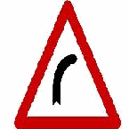
這是「左彎」。
數字：—
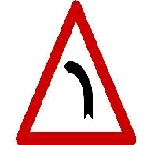
這是「連續彎路先向右」。
數字：—
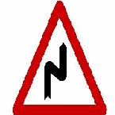
這是「連續彎路先向左」。
數字：—
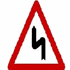
這是「狹路」。
數字：—
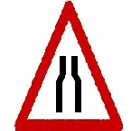
這是「狹橋」。
數字：—
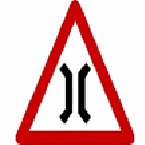
這是「左側車道縮減」。
數字：—
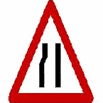
這是「右側車道縮減」。
數字：—
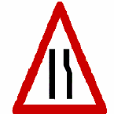
這是「圓環」。
數字：—
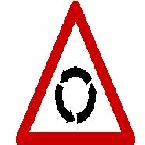
這是「路面顛簸」。
數字：—
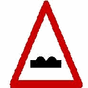
這是「路面高突」。
數字：—
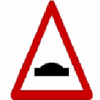
這是「慢行」。
數字：—
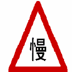
這是「停車再開」。
數字：—
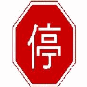
這是「靠右行駛」。
數字：—
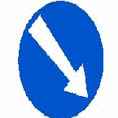
這是「最高速限」。
數字：—
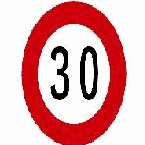
這是「最高速限」。
數字：—
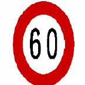
這是「禁止四輪以上汽車及機車進入」。
數字：—
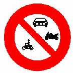
這是「禁止大型重型機車進入」。
數字：—
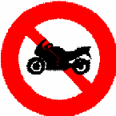
這是「禁止汽缸排氣量 550 立方公分以上大型重型機車進入」。
數字：—
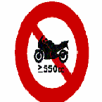
這是「禁止自行車進入」。
數字：—
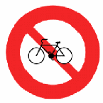
這是「禁止超車」。
數字：—
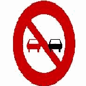
這是「禁止迴車」。
數字：—
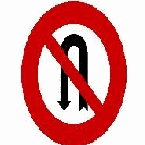
黃色實線是指： 答：禁止停車線
數字：—
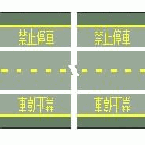
這是「行車分向線」。
數字：—
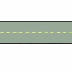
這是「近障礙物線」。
數字：—
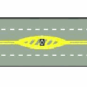
白色虛線是指： 答：車道線
數字：—
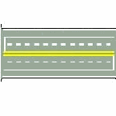
黃色雙實線是指： 答：雙向禁止超車線
數字：—
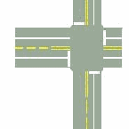
紅色實線是指： 答：禁止臨時停車線
數字：—
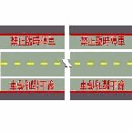
白色倒三角形標線是指： 答：讓路線
數字：—
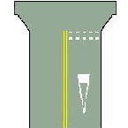
( 答：近鐵路平交道線
數字：—
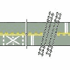
這是「枕木紋行人穿越道線」。
數字：—
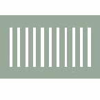
這是「左道封閉」。
數字：—
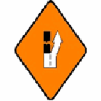
這是「右道封閉」。
數字：—
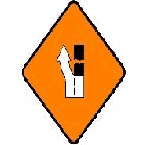
這是「道路施工」。
數字：—
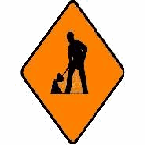
這是「車輛改道」。
數字：—
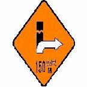
道路指定 答：自行車及大型重型機車以外之機車專行
數字：—
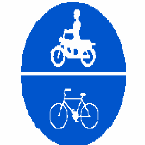
這是「指定四輪以上汽車及汽缸排氣量 550 立方公分以上大型重型機車專行」。
數字：—
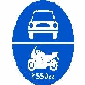
這是「道路指定四輪以上汽車及大型重型機車專行」。
數字：—
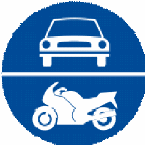
這是「車道指定四輪以上汽車及汽缸排氣量 550 立方公分以上大型重型機車專行」。
數字：—
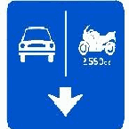
這是「車道指定自行車及大型重型機車以外之機車專行」。
數字：—
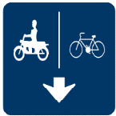
這是「車道指定自行車專行」。
數字：—
這是「捷運車站」。
數字：—
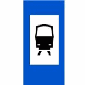
這是「高速鐵路車站」。
數字：—
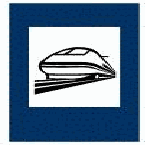
這是「人行天橋」。
數字：—
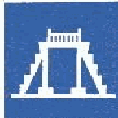
左臂向上，手掌向右微曲，表示： 答：右轉彎
數字：—
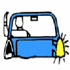
左臂平伸，手掌向下，表示： 答：左轉彎
數字：—
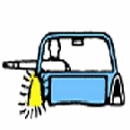
左臂向下垂伸，手掌向後，表示： 答：減速暫停
數字：—
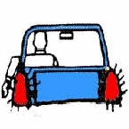
這是「道路僅准左轉」。
數字：—
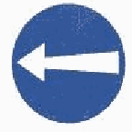
這是「方向里程指示」。
數字：—
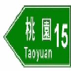
本標誌為高速公路指引標誌，用以指引： 答：一般道路 之車輛駛往高速公路交流道
數字：—
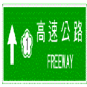
這是「里程牌」。
數字：—
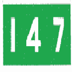